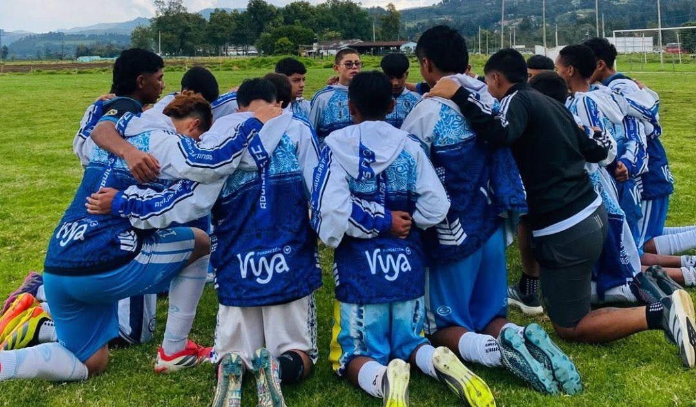

Jugadores activos
Categorías de formación
Canchas propias de fútbol 11
Jugadores en Casa Hogar

Nuestro compromiso trasciende la formación deportiva. A través de la Casa Hogar institucional brindamos formación en valores, acompañamiento académico, desarrollo mental y emocional, además de orientar a los jugadores en la construcción de su proyecto de vida. Este trabajo permite impactar no solo a los deportistas, sino también a sus familias y a la comunidad.
Evaluamos de manera continua el rendimiento de los jugadores para identificar su potencial deportivo y fortalecer su proyección hacia el fútbol profesional mediante procesos de scouting institucional.
Brindamos orientación y acompañamiento durante
el proceso de crecimiento deportivo, facilitando
oportunidades para que los jugadores continúen su
desarrollo hacia el fútbol profesional.
Promovemos la proyección de nuestros jugadores
hacia escenarios nacionales e internacionales, generando
oportunidades para su desarrollo deportivo y profesional.